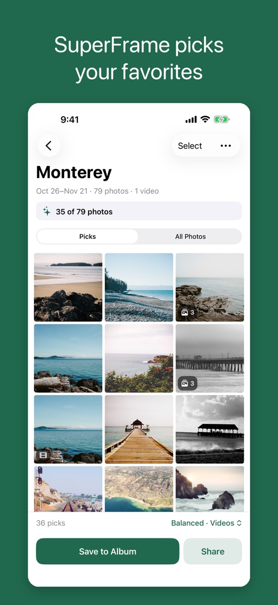
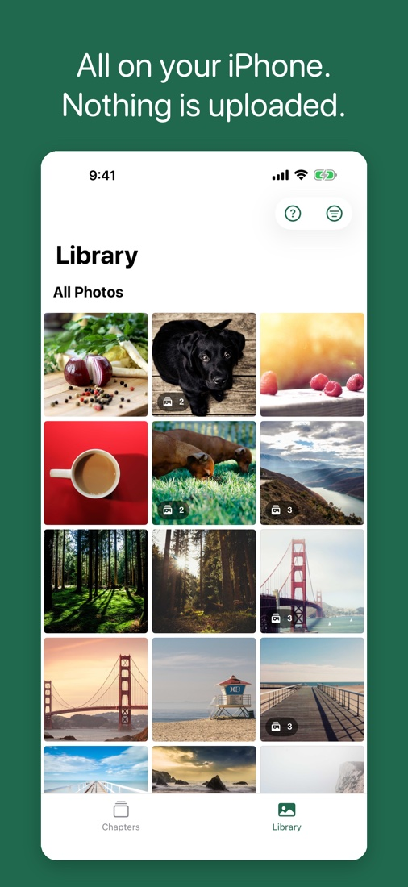

SuperFrame
Find your favorites, faster
SuperFrame uses AI models running on your device to find your favorite photos, quickly and privately.
Point it at a trip, an album or a busy month, and it studies every photo for focus, lighting, smiles, closed eyes and several other signals to help you choose the best photos. It does the same for your videos, finding the frames worth saving as photos.
Your photos never leave your device. There's no account and no ads, and SuperFrame never deletes or edits your photos.


Support
Questions, problems or ideas? Email rmody999@gmail.com.